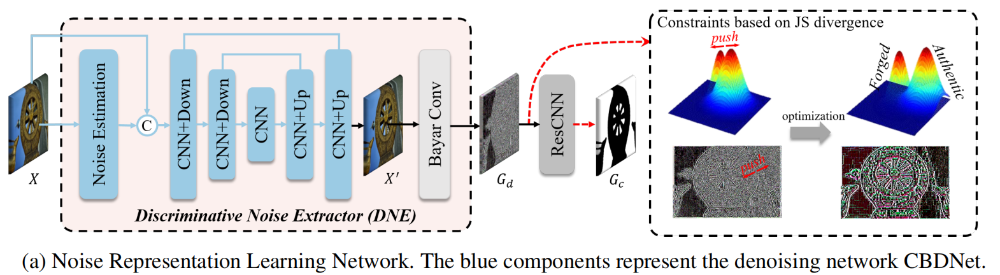

论文合集
Attentive and Contrastive Image Manipulation Localization With Boundary Guidance(TIFS24)
现有问题： 在被操纵的图像中，被篡改区域的边界是分离被操纵和未被操纵像素的关键位置，在定位被操纵区域时应特别注意并明确利用这一点。然而，如何利用这些边界信息来提高检测被操纵图像区域的性能仍有待探索。。
解决方案：提出了一种新的边界引导图像操纵定位模型，该模型通过精心设计的注意力和对比学习机制充分利用被篡改区域的边界信息，在框架的解码器中引入了一个边界感知注意模块，旨在指导模型通过提取被操纵区域的边界来强调图像操作的非自然混合，我们提出了一种边界引导的篡改对比损失，鼓励模型将样本的边缘从篡改和非篡改区域扩大到最大的程度。
具体情况
其网路架构如下：
A
New Benchmark and Model for Challenging Image Manipulation
Detection(AAAI24)
现有问题：
- 所有现有的IMD技术在从大图像中检测小的篡改区域时都遇到了挑战。
- 基于压缩的IMD方法在相同质量因子的双重压缩的情况下面临困难。
解决方案：包含RGB和频率特征的双分支架构，能够检测双压缩伪影的压缩伪影学习模型。
具体情况
RGB和频率特征的双分支架构

双压缩伪影的压缩伪影学习模型

MGQFormer: Mask-Guided Query-Based Transformer for Image Manipulation Localization(AAAI24)
现有问题： - 所有现有的IMD主要通过交叉熵损失使用真值掩码，该损失优先考虑逐像素精度，但忽略了篡改区域的空间位置和形状细节。
解决方案：一种基于掩码引导查询的转换器框架（MGQFormer），该框架使用基本事实掩码来引导可学习查询令牌（LQT）识别伪造区域。
具体情况

利用BayarConv和Transformer编码器从输入图像中提取RGB和噪声特征，过空间和通道注意模块（SCAM,spatial and channel attention module）对多模态特征进行融合。其特征提取器如下:

我们设计了两个可学习的查询token来表示真实和伪造的特征，它们用于在我们提出的基于查询的Transformer解码器中搜索篡改区域。为了使查询token有效参考和基于查询的解码器快速收敛，我们提出了一种利用GroundTruth掩模的空间位置和形状细节的掩模引导训练策略。其解码器如下:

具体来说，我们将噪声的GT掩模输入MGQFrorer，以获得引导查询token（GQT)和辅助掩模 $ M_{aux} $ 。然后，利用辅助损失 $ L_{aux} $ ，使GQT包含伪造区域的空间和形状信息。此外，我们提出了一种掩模引导的损失 $ L_{guide} $ 来减小LQT和GQT之间的距离。
Learning Discriminative Noise Guidance for Image Forgery Detection and Localization(AAAI24)
现有问题： - 随着篡改和后处理技术的发展，这两个区域在噪声域之间的差异变得不那么明显，甚至不那么隐藏。鉴于这些缺陷，我们建议明确地学习和利用噪声的不一致性可以进一步提高IFDL的性能。
解决方案：通过关注噪声域内的操纵痕迹来检测和定位图像伪造，一种两阶段判别噪声引导的方法，第一阶段训练一个噪声提取器，以明确地扩大真实区域和伪造区域之间的噪声分布差异，第二阶段将噪声不一致和RGB数据集成，以进行伪造检测和定位。
具体情况
一阶段：

为了明确地分离出这两个区域（真实的和伪造的)的噪声分布，我们引入了JS散度来约束
$ G_d $ 。首先，我们利用 groundtruth掩模，将 $ G_d $ 划分为真实区域 $
N_a $ 的噪声和伪造区域 $ N_f $ 的噪声。

式中， $ _a $ 、 $ _f $ 为 $ N_a $ 和 $ N_f $ 的标准差， $ _a $ 、 $ _f $ 为 $ N_a $ 和 $ N_f $ 的平均值。
\[\mathbf{L_{n}}=\lambda\left(1-JSD\right)+\left(1-\lambda\right)\mathcal{L}\left(Y,G_{c}\right)\] 二阶段：
利用两个分支来处理RGB和噪声信息，为了保证噪声不一致对RGB的引导作用，我们设计了CAGF，并将其与ResNet块交替放置。在噪声的引导下，RGB分支可以提取出与篡改伪影高度相关的特征。
CatmullRom Splines-Based Regression for Image Forgery Localization(AAAI24)
现有问题： 假阳性（FPs）和不准确的边界。
解决方案：基于CatmullRom样条的回归网络（CSR-Net, CatmullRom Splines-based Regression Network），首次尝试将回归方法引入像素级任务。为了明确抑制假阳性样本和避免不确定性边界，我们设计两个相互互补和强化的组件，即综合再评分算法（CRA,Comprehensive Re-scoring Algorithm），综合评估每个区域的信任分数作为篡改区域，而垂直纹理交互感知（VTP, Vertical Texture-interactive Perception）控制生成更准确的区域边缘。
具体情况
在本文中，我们精心设计了一个定制的基于CatmullRom样条的回归网络（CSR-Net），并尝试将回归方法引入像素级图像篡改定位（本文中的IFL）。
详细地说，与传统的边界盒检测方法相比，我们引入了CatmullRom定位技术，该技术对目标区域控制点的轮廓进行了建模，从而实现了更准确和有效的篡改区域定位。然后，为了抑制FPs（假阳性），设计了综合再评分算法（CRA），我们为每个区域实例重新分配分数，区域实例的综合得分由分类得分（CLS）和实例得分（INS）两部分组成。
此外，我们还提出了一个可学习的区域纹理提取模块垂直纹理交互感知（VTP）来进一步参考边缘。

因此，CSRNet可以在不接近FPs的情况下感知所有被篡改的区域，并实现准确的定位。大量的实验表明，CSR-Net优于现有的最先进的方法，不仅在自然图像数据集上，而且在社交媒体数据集上。
Multi-view Feature Extraction via Tunable Prompts is Enough for Image Manipulation Localization(ACMMM24)
现有问题：IML任务中公共训练数据集的稀缺直接阻碍了模型的性能。
解决方案：提出了一个Prompt-IML框架，该框架通过采用可调提示来利用预训练模型的丰富先验知识。
具体情况
通过集成可调提示，从单个预先训练过的主干中提取和调整多视图特征，从而保持性能和鲁棒性
特征对齐和融合的FAF模块
现有问题：以往的方法主要利用为高级视觉任务设计的深度卷积神经网络作为特征编码器或直接连接来自不同层的特征，不能充分表示篡改痕迹；目前的高级方法关注于像素或补丁级的一致性，而忽略了对象级的信息，在自然语言提示的引导下，自动生成的伪造部分更有可能表现出对象的不一致。
解决方案：设计了专门用于提取取证工件的边界敏感特征交互网络（BSFI-Net, Boundary Sensitive Feature Interaction Network）设计了用于图像操作检测和定位的多视图表示的统一学习transformer框架
具体情况
cnn-Transformer并发网络 BSFI-Net，该网络在保持边缘灵敏度的同时，促进了两个分支中不同尺度的特征之间的彻底交互。

采用对比监督来促进两个视图之间的协作

统一伪造判别表示，每个篡改判别查询都表示对应建议的三个视图中的篡改线索

Learning Discriminative Noise Guidance for Image Forgery Detection and Localization(AAAI24)
现有问题：篡改痕迹主要来源于真实区域和伪造区域的噪声分布则不一致性。
解决方案：使用两阶段训练方法：第一阶段训练一个噪声提取器，以明确地扩大真实区域和伪造区域之间的噪声分布差异。第二阶段是将噪声不一致和RGB数据集成，以进行伪造检测和定位。
具体情况
第一阶段，训练一个特征提取器，使用的是DNE，一个盲去噪网络，使用JS散度来约束Gd，将Gd 划分为真实区域Na和伪造区域Nf，将其视为两个高斯分布
\[ JSD=\\log\\frac{\\sqrt{\\sigma_{a}^{2}+\\sigma_{f}^{2}}}{2}-\\frac{\\log\\sigma_{a}+\\log\\sigma_{f}}{2}+\\frac{(\\mu_{a}-\\mu_{f})^{2}}{\\sigma_{a}^{2}+\\sigma_{f}^{2}}+\\frac{1}{2} \]
\[ \\mathbf{L_{n}}=\\lambda\\left(1-JSD\\right)+\\left(1-\\lambda\\right)\\mathcal{L}\\left(Y,G_{c}\\right) \]
第二阶段，使用一阶段训练好的特征提取器DNE，为了保证噪声不一致对RGB的引导作用，我们设计了CAGF，并将其与ResNet块交替放置。
CVPR '23:
TruFor: Leveraging all-round clues for trustworthy image forgery detection and localization
ICCV '23:
Towards Generic Image Manipulation Detection with Weakly-Supervised Self-Consistency Learning
WACV' 23:
CFL-Net: Image Forgery Localization Using Contrastive Learning (WACV '23) [Paper] [Code]
TPAMI '22:
MVSS-Net: Multi-View Multi-Scale Supervised Networks for Image Manipulation Detection
CLIP
原论文：
Learning
Transferable Visual Models From Natural Language Supervision
Prompt Learning for Vision Language Models
自监督学习——对比学习
https://proceedings.mlr.press/v119/chen20j.html
https://github.com/google-research/simclr
https://paperswithcode.com/paper/a-simple-framework-for-contrastive-learning
本文介绍了SimCLR：一个用于视觉表征对比学习的简单框架。我们简化了最近提出的对比自监督学习算法，而不需要专门的架构或内存库。为了理解是什么使对比预测任务能够学习有用的表征，我们系统地研究了我们框架的主要组成部分。我们表明：（1）数据增强的组成在定义有效的预测任务中起着关键作用；（2）在表征和对比损失之间引入可学习的非线性变换，大大提高了学习表征的质量；（3）与监督学习相比，对比学习受益于更大的批量和更多的训练步骤。通过结合这些发现，我们能够在ImageNet上大大优于以前的自监督和半监督学习方法。在SimCLR学习的自监督表示上训练的线性分类器实现了76.5%的top-1准确率，这比以前的最先进技术提高了7%，与监督ResNet-50的性能相匹配。当只对1%的标签进行微调时，我们实现了85.8%的前五名准确率，比AlexNet少了100倍的标签。
Matrix Information Theory for Self-Supervised Learning
https://paperswithcode.com/paper/kernel-ssl-kernel-kl-divergence-for-self
监督对比学习
Supervised Contrastive Learning | Papers With Code
>
> Supervised Contrastive Learning NeurIPS 2020
arXiv
Rethinking Image Forgery Detection via
Contrastive Learning and Unsupervised Clustering
图像伪造检测旨在检测和定位图像中的伪造区域。大多数现有的伪造检测算法都提出了将像素分类为伪造或原始的分类问题。然而，伪造像素和原始像素的定义仅在单个图像内是相对的，例如，图像a中的伪造区域实际上是其源图像B中的原始区域（拼接伪造）。现有的方法严重忽视了这种相对定义，不必要地将不同图像中的伪造（原始）区域混合到同一类别中。为了解决这一困境，我们提出了模糊控制聚类（FOCAL）方法，这是一种新的、简单但非常有效的基于对比学习和无监督聚类的图像伪造检测方法。
具体而言，FOCAL 1）利用像素级对比学习，以逐图像的方式监督高级取证特征提取，明确地反映了上述相对定义；2） 采用动态无监督聚类算法（而不是经过训练的算法）将学习到的特征聚类为伪造/原始类别，进一步抑制了训练数据对跨图像的影响；以及3）允许在不需要重新训练的情况下通过简单的特征级级联来进一步提高检测性能。论文（c）
MMM '24：
Exploring
Multi-Modal Fusion for Image Manipulation Detection and
Localization
图片分别经过阶梯分析丰富模型SRM（高通滤波器） , bayar 卷积之后和通过NoisePrint++提取的特征送入多尺度编码器进行编码，之后分别通过异常检测解码器和置信度解码器获得预测图和置信图，最后池化后通过篡改解码器，得到篡改可能分数。